Fi.Art is a comprehensive personal finance application built for people who want full control over their financial data, without sacrificing power or privacy, and without handing their entire financial history to a cloud platform. From automated bank synchronisation and intelligent transaction categorisation to long-term FIRE projections and trip expense tracking, Fi.Art brings together every tool you need to understand, manage, and plan your financial independence, entirely on your own device.
Use Fi.Art in the way that suits you best: connect supported bank accounts, import statements manually, record cash expenses yourself or combine all three approaches. Every major module can be enabled, disabled and configured independently.
The demo runs in your browser on fictional data. Nothing you do there leaves this page.
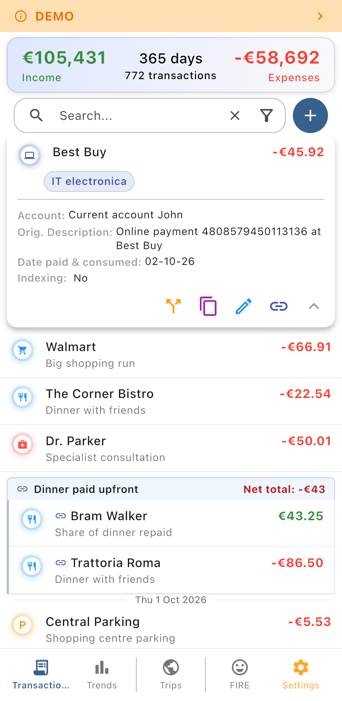
Bring transactions in however you like, then organise them exactly as your life actually works.
Bank connections are read-only account-information connections. Neither Fi.Art connections nor your open banking authentication has permission to initiate payments.
Fi.Art learns from your own categorization history. When a new transaction arrives from a familiar counterparty, the app proposes the categories you used before and can prefill the related information. Your most frequently used categories are always one tap away as quick suggestions.
During first setup, or right after connecting a new account, transactions can be grouped by counterparty so that many entries from the same vendor are assigned in a single operation. Bulk edits are available for selected transaction fields, turning a daunting backlog into a short one-time task.
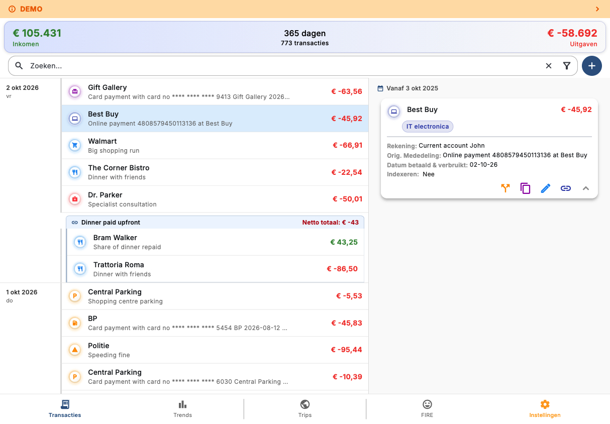
A transaction can record both when it was actually paid via your bank account and when the purchase is 'consumed'. That keeps your spending honest for a concert or airline ticket bought today for an event months from now, as well as for a refund received today on an expense paid in the past.
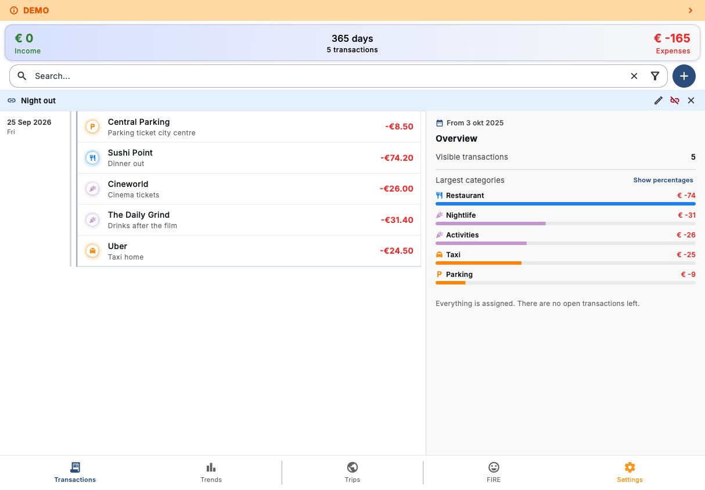
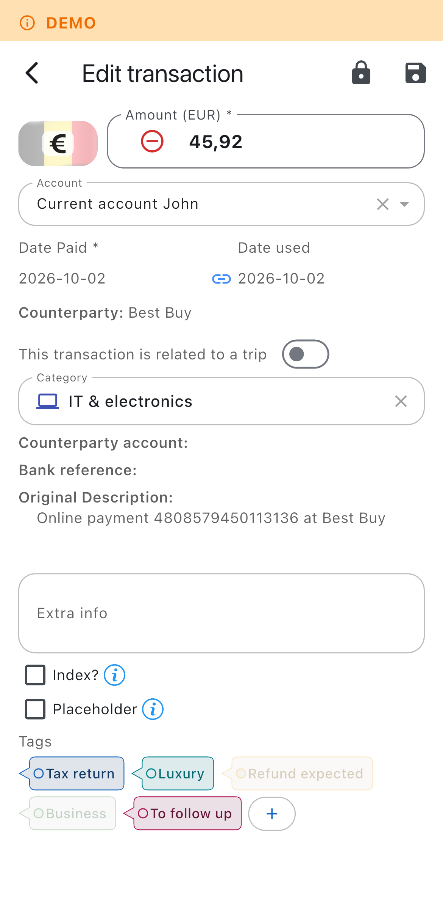
A sensible default category structure is provided out of the box, covering the most common personal finance needs. From there it is yours: create parent categories and subcategories, change icons and colours, archive what you no longer use and configure income, expense, travel and one-time behaviour to match your own system.
Fi.Art includes a dedicated travel workspace that turns scattered holiday transactions into a complete trip record, instead of just seeing them as a filter in between all other transactions.
Record the people travelling with you and specify how each shared expense should be divided. Fi.Art supports equal shares, exact amounts, percentages, share counts and settlement entries. The trip view keeps track of:
Trip overviews and detailed expense tables can be shared with your fellow travellers, including participant totals, outstanding balances and the underlying expense breakdown. All of that without registering their email address and without requiring them to create an account or run the app themselves.
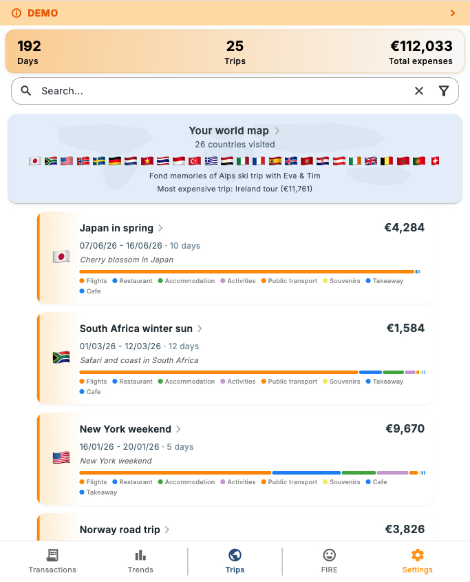
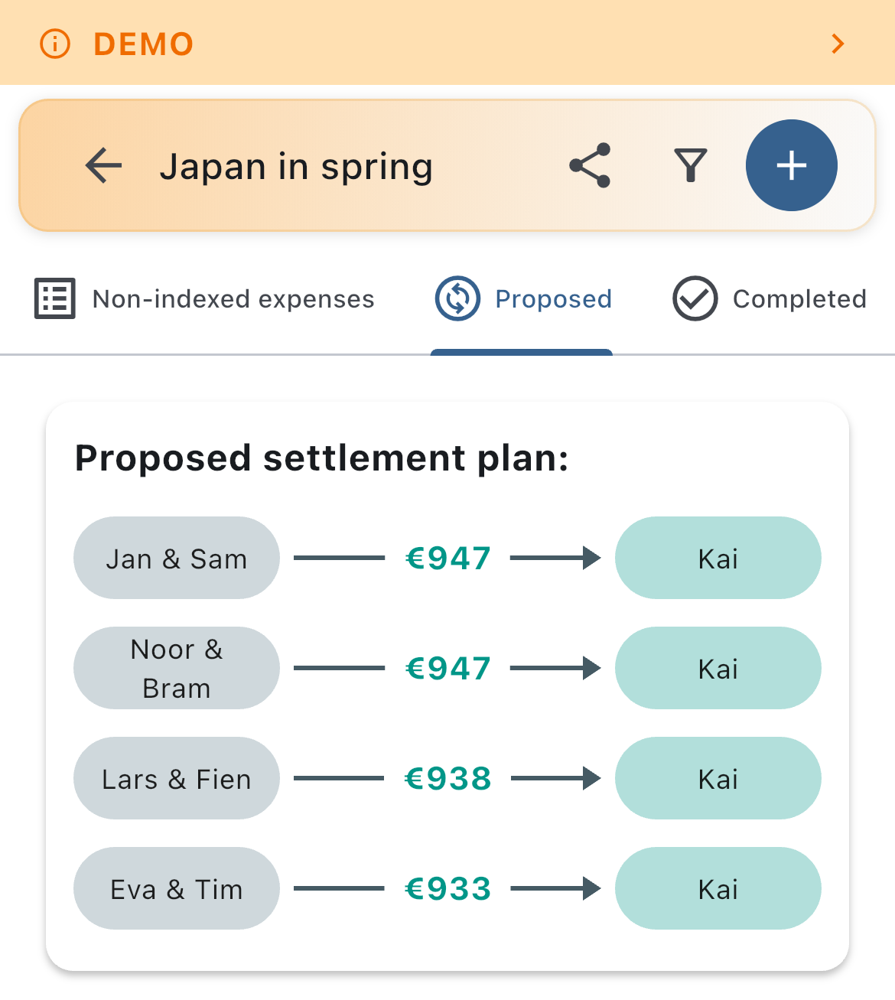
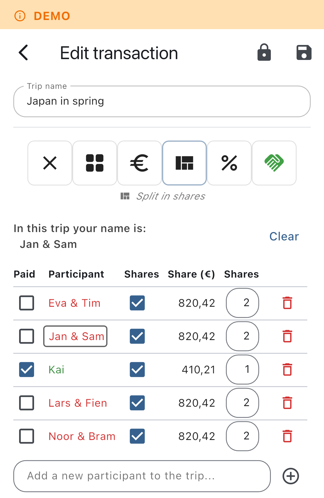
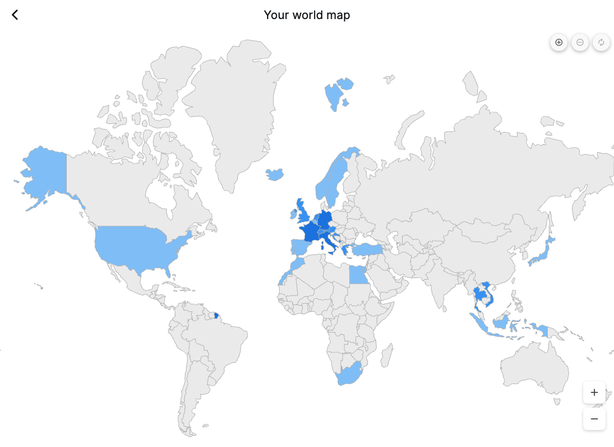
The interactive world map highlights every country you have visited across your trips. Select a country and Fi.Art reveals the related travel statistics and the trips associated with it.
Fi.Art provides several views for exploring financial data across a selected period.
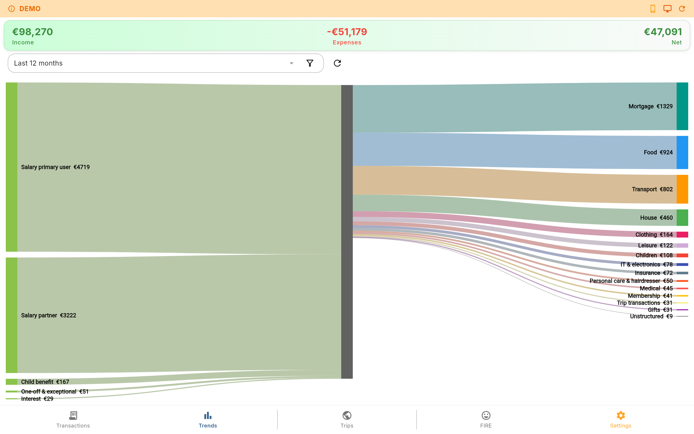
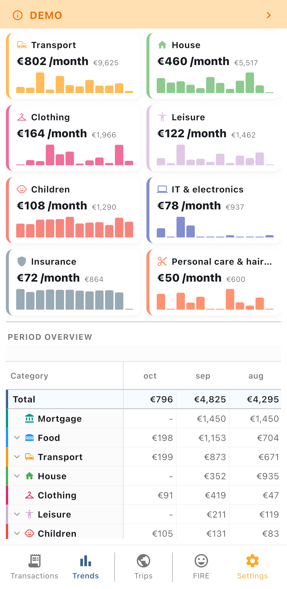
Fi.Art's FIRE module connects long-term planning to the spending and income patterns already recorded in the application, so your projection is built on your real life rather than a generic average.
Adjust your desired FIRE age and watch the timeline rebuild year by year, showing exactly how income, expenses, inflation, capital and future events shape the result. Depending on the assumptions, Fi.Art can show:
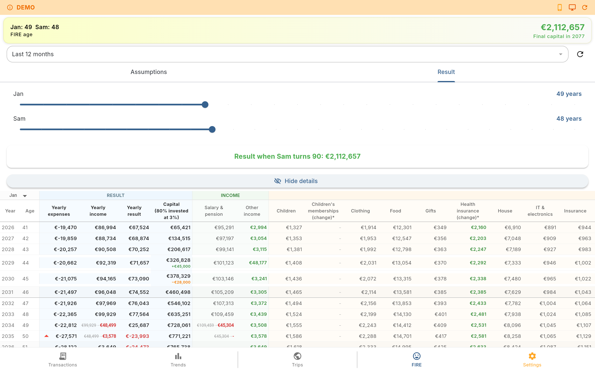
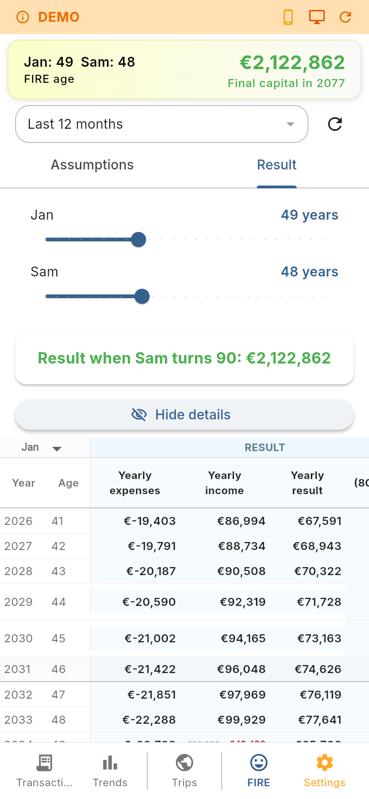
The FIRE result is meant to be inspected rather than a single unexplained number. Every rule can be reviewed and adjusted to see how it changes the outcome.
Fi.Art includes a complete demo database with realistic fictional data. Demo mode lets you explore transactions, categories, trips, charts, FIRE projections, maps, settings and other local workflows without entering a single detail of your own financial information. The demo database can be reset at any time, so you can safely repeat the tour and test different screens.
Fi.Art is modular. Settings allow you to enable, disable or fine-tune every feature as desired, so the app stays as simple or as complete as you want it.
The app also includes multilingual support, configurable home currency and country settings, account-level currency-rate sources and bank-fee settings, saved filters and display preferences.
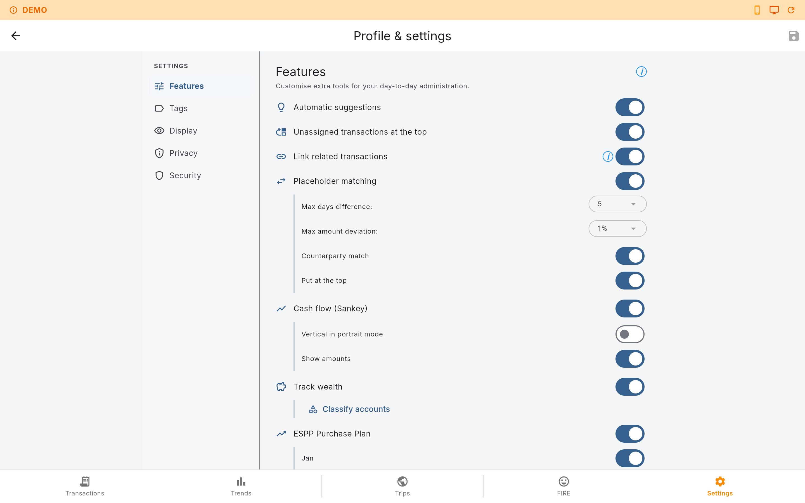
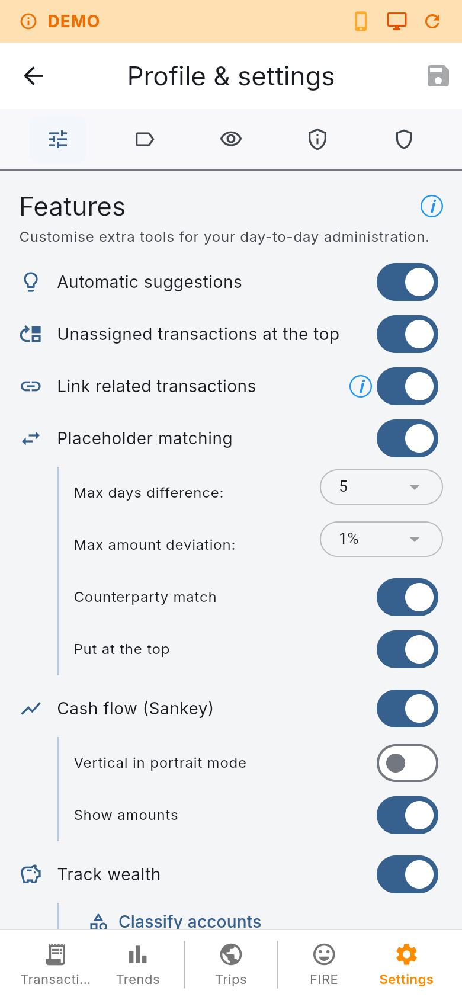
The calculated values are there as a quick reference and never touch your underlying transaction records.
Fi.Art keeps the working database on the device and gives you control over how data leaves it.
Encrypted native database storage currently uses SQLCipher-based encryption on iOS, Android, Windows and MacOS.
Fi.Art is built around local ownership of personal financial data.
Encryption and secure hardware-backed credential storage depend on the capabilities of the platform on which the app is running.
The Flutter application targets:
The project also contains a web build and an online demo build. Native platforms provide the broadest security and file-system capabilities. Web builds use browser storage and therefore have different encryption, credential-storage and file-export behaviour. To ensure the highest security, reliability and privacy it is therefore not recommended to run Fi.Art as a browser based application, despite it being fully functional as such as can be seen in the demo environment.
The responsive interface keeps the same core workflows across mobile and desktop layouts, while adapting tables, charts, forms and navigation to the available screen size.
Fi.Art is for people who want detailed financial records without being forced into a single data-import method, budgeting philosophy or long-term planning model. Start with manual transactions, add CSV imports later, connect a bank when convenient, build detailed trip records and use FIRE projections only when they become useful to you.